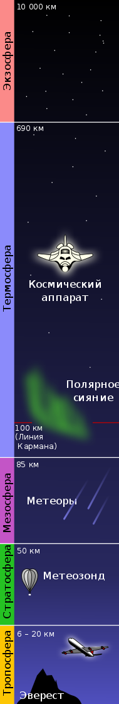
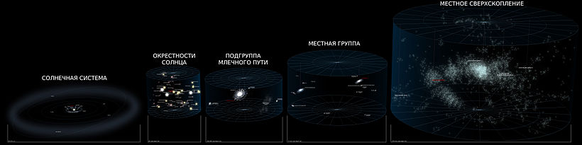

Этимология
В своём изначальном понимании греческий термин «космос» (порядок, мироустройство) имел философскую
основу,
определяя гипотетический замкнутый вакуум вокруг Земли — центра Вселенной. Тем не менее, в языках на
латинской основе и её заимствованиях к одинаковой семантике применяют практический термин «пространство»
(так как с научной точки зрения обволакивающий Землю вакуум бесконечен), поэтому в русском и близких ему
языках в результате реформенной корректировки родился своеобразный плеоназм «космическое пространство».
Границы
Чёткой границы не существует, атмосфера разрежается постепенно по мере удаления от земной поверхности, и
до
сих пор нет единого мнения, что считать фактором начала космоса. Если бы температура была постоянной, то
давление бы изменялось по экспоненциальному закону от 100 кПа на уровне моря до нуля. Международная
авиационная федерация в качестве рабочей границы между атмосферой и космосом установила высоту в 100 км
(линия Кармана), потому что на этой высоте для создания подъёмной аэродинамической силы необходимо,
чтобы
летательный аппарат двигался с первой космической скоростью, из-за чего теряется смысл
авиаполёта.
Астрономы из США и Канады измерили границу влияния атмосферных ветров и начала
воздействия
космических частиц. Она оказалась на высоте 118 километров, хотя само NASA считает границей космоса 122
км.
На такой высоте шаттлы переключались с обычного маневрирования с использованием только ракетных
двигателей
на аэродинамическое с «опорой» на атмосферу
Солнечная система
Пространство в Солнечной системе называют межпланетным пространством, которое переходит в межзвёздное
пространство в точках гелиопаузы солнцестояния. Вакуум космоса не является абсолютным — в нём
присутствуют
атомы и молекулы, обнаруженные с помощью микроволновой спектроскопии, реликтовое излучение, которое
осталось
от Большого взрыва, и космические лучи, в которых содержатся ионизированные атомные ядра и разные
субатомные
частицы. Также есть газ, плазма, пыль, небольшие метеоры и космический мусор (материалы, которые
остались от
деятельности человека на орбите). Отсутствие воздуха делает космическое пространство (и поверхность
Луны)
идеальными участками для астрономических наблюдений на всех длинах волн электромагнитного спектра.
Доказательством этого являются фотографии, полученные при помощи космического телескопа Хаббл. Кроме
того,
бесценную информацию о планетах, астероидах и кометах Солнечной системы получают с помощью космических
аппаратов.
Воздействие пребывания в открытом космосе на организм человека
Как утверждают учёные НАСА, вопреки распространённым представлениям, при попадании в открытый космос без защитного скафандра человек не замёрзнет, не взорвётся и мгновенно не потеряет сознание, его кровь не закипит — вместо этого настанет смерть от недостатка кислорода. Опасность заключается в самом процессе декомпрессии — именно этот период времени наиболее опасен для организма, так как при взрывной декомпрессии пузырьки газа в крови начинают расширяться. Если присутствует хладагент (например, азот), то при таких условиях он замораживает кровь. В космических условиях недостаточно давления для поддержания жидкого состояния вещества (возможны лишь газообразное или твёрдое состояние, за исключением жидкого гелия), поэтому вначале со слизистых оболочек организма (язык, глаза, лёгкие) начнёт быстро испаряться вода. Некоторые другие проблемы — декомпрессионная болезнь, солнечные ожоги незащищённых участков кожи и поражение подкожных тканей — начнут сказываться уже через 10 секунд. В какой-то момент человек потеряет сознание из-за нехватки кислорода. Смерть может наступить примерно через 1-2 минуты, хотя точно это не известно. Тем не менее, если не задерживать дыхание в лёгких (попытка задержки приведёт к баротравме), то 30-60 секунд пребывания в открытом космосе не вызовут каких-либо необратимых повреждений человеческого организма.
В НАСА описывают случай, когда человек случайно оказался в пространстве, близком к вакууму (давление ниже 1 Па) из-за утечки воздуха из скафандра. Человек оставался в сознании приблизительно 14 секунд — примерно такое время требуется для того, чтобы обеднённая кислородом кровь попала из лёгких в мозг. Внутри скафандра не возник полный вакуум, и рекомпрессия испытательной камеры началась приблизительно через 15 секунд. Сознание вернулось к человеку, когда давление поднялось до эквивалентного высоте примерно 4,6 км. Позже попавший в вакуум человек рассказывал, что он чувствовал и слышал, как из него выходит воздух, и его последнее осознанное воспоминание состояло в том, что он чувствовал, как вода на его языке закипает.
Журнал «Aviation Week and Space Technology» 13 февраля 1995 г. опубликовал письмо, в котором рассказывалось об инциденте, произошедшем 16 августа 1960 года во время подъёма стратостата с открытой гондолой на высоту 19,5 миль (около 31 км) для совершения рекордного прыжка с парашютом (Проект «Эксельсиор»). Правая рука пилота оказалась разгерметизирована, однако он решил продолжить подъём. Рука, как и можно было ожидать, испытывала крайне болезненные ощущения, и ею нельзя было пользоваться. Однако при возвращении пилота в более плотные слои атмосферы состояние руки вернулось в норму.
Космонавт Михаил Корниенко и астронавт Скотт Келли, отвечая на вопросы, сообщили, что нахождение в открытом космосе без скафандра может привести к выходу азота из состава крови, заставив её, по сути, кипеть.
Границы на пути к космосу и пределы дальнего космоса
Атмосфера и ближний космос
-
Уровень моря — атмосферное давление 101,325 кПа (1 атм.; 760 мм рт. ст), плотность среды 2,55⋅1022 молекул в дм³[9]. Яркость дневного ясного неба 1500—5000 кд/м² при высоте Солнца 30—60
-
0,5 км — до этой высоты проживает 80 % человеческого населения мира.
-
2 км — до этой высоты проживает 99 % населения мира.
-
2—3 км — начало проявления недомоганий (горная болезнь) у неакклиматизированных людей.
-
4,7 км — МФА требует дополнительного снабжения кислородом для пилотов и пассажиров.
-
5,0 км — 50 % от атмосферного давления на уровне моря.
-
5,1 км — самый высокорасположенный (самый высокий населённый пункт город Ла-Ринконада (Перу).
-
5,5 км — пройдена половина массы атмосферы[13] (гора Эльбрус). Яркость неба в зените 646—1230 кд/м
-
6 км — граница обитания человека (временные посёлки шерпов в Гималаях), граница жизни в горах.
-
до 6,5 км — снеговая линия в Тибете и Андах. Во всех прочих местах она располагается ниже, в Антарктиде до 0 м над уровнем моря.

Околоземное космическое пространство
-
100 км — официальная международная граница между атмосферой и космосом — линия Кармана, рубеж
между
аэронавтикой и космонавтикой. Летающий корпус и крылья начиная со 100 км не имеют смысла, так
как
скорость полёта для создания подъёмной силы становится выше первой космической скорости и
атмосферный летательный аппарат превращается в космический спутник. Плотность среды 12
квадриллионов
частиц на 1 дм, яркость тёмно-буро-фиолетового неба 0,01—0,0001 кд/м² — приближается к яркости
тёмно-синего ночного неба. Высота однородной атмосферы 45 см.
-
100—110 км — начало разрушения спутника: обгорание антенн и панелей солнечных батарей.
-
110 км — минимальная высота аппарата, буксируемого более высоколетящим тяжёлым спутником.
-
110—120 км — минимальная высота начала последнего витка спутника с наименьшим BC.
-
118 км — переход от атмосферного ветра к потокам заряженных частиц.
-
121—122 — самый низкий начальный перигей секретных спутников, но апогей их был 260—400 км.
-
122 км (400 000 футов) — первые заметные проявления атмосферы при возвращении с орбиты:
набегающий
воздух стабилизирует крылатый аппарат типа Спейс Шаттл носом по ходу движения.
-
120—130 км — шарообразный спутник диаметром 1—1,1 м и массой 500—1000 кг, завершая оборот,
переходит
в баллистический спуск; однако обычно спутники менее плотные, имеют необтекаемые выступающие
детали,
и потому высота начала последнего витка не менее 140 км.
-
135 км — максимальная высота начала сгорания самых быстрых метеоров и болидов.
-
160 км (100 миль) — граница начала более-менее стабильных низких околоземных орбит.
Межпланетное пространство
-
260 000 км — радиус сферы тяготения, где притяжение Земли превосходит притяжение Солнца.
-
363 104—405 696 км — высота орбиты Луны над Землёй (30 диаметров Земли). Плотность среды
межпланетного пространства (плотность солнечного ветра) в окрестностях земной орбиты 5—10 тысяч
частиц на 1 дм³ со всплесками до 200 000 частиц в 1 дм³ во время солнечных вспышек.
-
401 056 км — абсолютный рекорд высоты, на которой был человек (Аполлон-13 14 апреля 1970 г.).
-
928 000 км — радиус гравитационной сферы Земли.
-
1 497 000 км — радиус сферы Хилла Земли и максимальная высота её орбитальных спутников с
периодом обращения 1 год. Выше притяжение Солнца будет перетягивать вышедшие из сферы тела.
-
1 500 000 км — расстояние до одной из точек либрации L2, в которых попавшие туда тела находятся
в гравитационном равновесии. Космическая станция, выведенная в эту точку, с минимальными
затратами топлива на коррекции траектории всегда бы следовала за Землёй и находилась бы в её
тени.
-
21 000 000 км — можно считать, что исчезает гравитационное воздействие Земли на пролетающие
объекты.
-
40 000 000 км — минимальное расстояние от Земли до ближайшей большой планеты Венера.
-
56 000 000 — 58 000 000 км — минимальное расстояние до Марса во время Великих противостояний.
-
149 597 870,7 км — среднее расстояние от Земли до Солнца. Это расстояние служит мерилом
расстояний в Солнечной системе и называется астрономическая единица (а. е.). Свет проходит это
расстояние примерно за 500 секунд (8 минут 20 секунд).

Межзвёздное пространство
-
ок. 300 000 000 000 км (300 млрд км) — ближняя граница облака Хиллса, являющегося внутренней
частью облака Оорта — большого, но очень разреженного шарообразного скопища ледяных глыб,
которые медленно летят по своим орбитам. Изредка выбиваясь из этого облака и приближаясь к
Солнцу, они становятся долгопериодическими кометами.
-
4 500 000 000 000 км (4,5 трлн км) — расстояние до орбиты гипотетической планеты Тюхе,
вызывающей исход комет из Облака Оорта в околосолнечное пространство.
-
9 460 730 472 580,8 км (ок. 9,5 трлн км) — световой год — расстояние, которое свет со скоростью
299 792 км/с проходит за 1 год. Служит для измерения межзвёздных и межгалактических расстояний.
-
до 15 000 000 000 000 км — дальность вероятного нахождения гипотетического спутника Солнца
звезды Немезида, ещё одного возможного виновника прихода комет к Солнцу.
-
до 20 000 000 000 000 км (20 трлн км, 2 св. года) — гравитационные границы Солнечной системы
(Сфера Хилла) — внешняя граница Облака Оорта, максимальная дальность существования спутников
Солнца (планет, комет, гипотетических слабосветящих звёзд).
-
30 856 776 000 000 км — 1 парсек — более узкопрофессиональная астрономическая единица измерения
межзвёздных расстояний, равен 3,2616 светового года.
-
ок. 40 000 000 000 000 км (40 трлн км, 4,243 св. года) — расстояние до ближайшей к нам известной
звезды Проксима Центавра.
-
ок. 56 000 000 000 000 км (56 трлн км, 5,96 св. года — расстояние до летящей звезды Барнарда. К
ней предполагалось послать первый реально проектируемый с 1970-х годов беспилотный аппарат
«Дедал», способный долететь и передать информацию в пределах одной человеческой жизни (около 50
лет).
-
100 000 000 000 000 км (100 трлн км, 10,57 св. года) — в пределах этого радиуса находятся 18
ближайших звёзд, включая Солнце.
-
ок. 300 000 000 000 000 км (300 трлн км, 30 св. лет) — размер Местного межзвёздного облака,
через которое сейчас движется Солнечная система (плотность среды этого облака 300 атомов на 1
дм³).

Межгалактическое пространство
-
ок. 5 000 000 000 000 000 000 км (ок. 5 квинтиллионов км) — размер подгруппы Млечного Пути, в
которую входят наша галактика и её спутники карликовые галактики, всего 15 галактик. Самые
известные из них — Большое Магелланово Облако и Малое Магелланово Облако, через 4 миллиарда лет
они вероятно будут поглощены нашей галактикой.
-
ок. 30 000 000 000 000 000 000 км (ок. 30 квинтиллионов км, ок. 1 млн парсек) — размер Местной
группы галактик, в которую входят три крупных соседа: Млечный путь, Галактика Андромеды,
Галактика Треугольника, и многочисленные карликовые галактики (более 50 галактик). Галактика
Андромеды и наша галактика сближаются со скоростью около 120 км/с и вероятно столкнутся друг с
другом примерно через 4—5 миллиардов лет.
-
ок. 2 000 000 000 000 000 000 000 км (2 секстиллиона км, 200 млн св. лет) — размер Местного
сверхскопления галактик (Сверхскопления Девы) (около 30 тысяч галактик, масса около квадриллиона
Солнц).
-
к. 4 900 000 000 000 000 000 000 км (4,9 секстиллиона км, 520 млн св. лет) — размер ещё более
крупного сверхскопления Ланиакея («Необъятные небеса»), в которое входят наше сверхскопление
Девы и так называемый Великий аттрактор, притягивающий к себе и заставляющий двигаться
окружающие галактики, включая нашу, со скоростью обращения около 500 км/с. Всего в Ланиакее
около 100 тысяч галактик, масса её около 100 квадриллионов Солнц.
-
ок. 10 000 000 000 000 000 000 000 км (10 секстиллионов км, 1 млрд св. лет) — длина Комплекса
сверхскоплений Рыб-Кита, называемого ещё галактической нитью и гиперскоплением Рыб-Кита, в
котором мы живём (60 скоплений галактик, 10 масс Ланиакеи или около квинтиллиона Солнц).
-
до 100 000 000 000 000 000 000 000 км — расстояние до Супервойда Эридана, самого большого на
сегодня известного войда размером около 1 млрд св. лет. В центральных областях этого огромного
пустого пространства нет звёзд и галактик, и вообще почти нет обычной материи, плотность его
среды 10 % от средней плотности Вселенной или 1 атом водорода в 1—2 м³. Космонавт в центре войда
без большого телескопа не смог бы увидеть ничего, кроме темноты.
На рисунке справа в кубической вырезке из Вселенной видны многие сотни больших и малых войдов,
расположенных, как пузыри в пене, между многочисленными галактическими нитями. Объём войдов
намного больше объёма нитей.
-
ок. 100 000 000 000 000 000 000 000 км (100 секстиллионов км, 10 млрд св. лет) — длина великой
стены Геркулес — Северная корона, самой большой известной сегодня суперструктуры в наблюдаемой
Вселенной. Находится на расстоянии около 10 млрд световых лет от нас. Свет от нашего только
родившегося Солнца сейчас находится на полпути к Великой стене, а достигнет её, когда Солнце уже
погибнет.
-
ок. 250 000 000 000 000 000 000 000 км (ок. 250 секстиллионов км, свыше 26 млрд св. лет) —
размер пределов видимости вещества (галактик и звёзд) в наблюдаемой Вселенной (около 2
триллионов галактик).
-
ок. 870 000 000 000 000 000 000 000 км (870 секстиллионов км, 92 млрд св. лет) — размер пределов
видимости излучения в наблюдаемой Вселенной.
Для того чтобы выйти на орбиту, тело должно достичь определённой скорости. Космические скорости для Земли:
Если же какая-либо из скоростей будет меньше указанной, то тело не сможет выйти на соответствующую орбиту (утверждение верно лишь для старта с указанной скоростью с поверхности Земли и дальнейшего движения без тяги).
Первым, кто понял, что для достижения таких скоростей при использовании любого химического топлива нужна многоступенчатая ракета на жидком топливе, был Константин Эдуардович Циолковский.
Скорости разгона космического аппарата при помощи одного только ионного двигателя для вывода его на земную орбиту недостаточно, но для движения в межпланетном космическом пространстве и маневрирования он вполне подходит и используется достаточно часто.